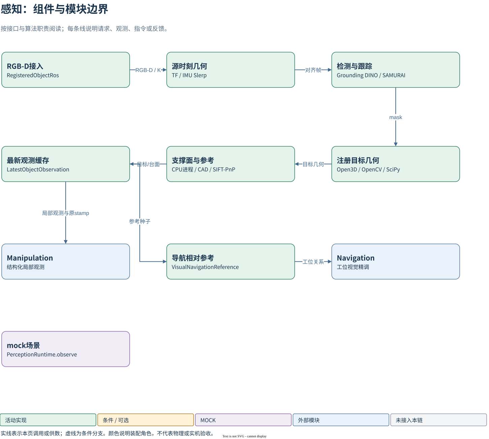

视觉感知模块严格恪守「感知仅在 perception_runtime
与隔离网关实现、操作层只消费同帧绑定并经过时间戳校验的观测对象、交互层只作用于受鉴权像素句柄」的设计红线。接口定义与前端页面展示逻辑分别见
交互网关与终端
与 Web 控制台指南。

一、开放词汇视觉接地网关：LocateAnything-3B
与 LensDetector
面对非预设纹理目标或自然语言指代任务，系统将大模型推理隔离于独立模型网关进程
apps/model_gateway/model_gateway_vision/
中，杜绝大权重抢占实时控制内存：
- 网关契约与安全校验（
locateanything_gateway.py）：LocateAnythingGateway（位于src/robot_app/modules/perception_runtime/infrastructure/models/locateanything_gateway.py）仅限连接回环 HTTP 端点并校验环境变量承载的 Bearer 令牌；输入图像通过O_NOFOLLOW防符号链接注入写入隔离缓存目录，以带 SHA-256 校验的ArtifactRef传递；默认使用模型nvidia/LocateAnything-3B（固定修订c32291ca5e996f5a7a485845b4f57a233936bba0），限制max_output_tokens = 768，返回0..1000归一化像素边界框box与指代点point。 - 多候选框与掩码映射（
LensDetector）：在src/robot_app/modules/perception_runtime/infrastructure/models/lens_gateway.py与lens.py中，LensDetector对接xiaomiLens 模型（固定修订68f57cdde1a19f751e78b18af04efa8ca8bd7fce），经source_candidates函数将裁剪区域归一化预测准确重映射至源像素坐标系。 - Web
端受限资源拉取与防污染：控制台面板（
apps/collaboration_platform/web/src/panels/Perception.tsx与apps/collaboration_platform/web/src/components/RealPerception.tsx）通过readDisplayResource按逐块长度与客户端SHA-256校验拉取源帧与分割遮罩；前端显式区分LIVE、HISTORY与STALE，并严禁把展示层渲染结果反推为物理仿真成功依据。
二、立体 RGB-D 自动识别与 6-DoF CAD 位姿配准
面向已知几何 CAD 模型的工业 LVDT 工件与标准工装，系统提供基于立体视觉的高精度位姿配准管线：
| 环节 | 核心技术与代码组件 | 实时限制与关键规则 |
|---|---|---|
| 立体相机取流与韧性恢复 | ZedRgbd 与 zed_cli（对应
tests/unit/test_zed_rgbd.py） |
同步输出 rgb8 / bgra、32FC1
米制深度与真实 CameraInfo 内参；强制单调
stamp_ns，遇到瞬时重复帧自动短时等待，流中断时执行两级进程内重绑定恢复 |
| 目标检测与 6D 位姿跟踪 | workpiece_pipeline（YOLOv8-seg +
FoundationPose） |
首帧注册执行 5 次精炼迭代，持续跟踪每次仅需
2 次迭代；内部严格区分 YOLOv8-seg 的 BGR 输入与
FoundationPose 的 RGB 输入格式，并要求观测延迟不超过
max_age_s = 0.2 s（RGB-D 双流配对容差
20 ms） |
| 多线程与 C++ 标签加速 | PerceptionDomain、AprilTagTracker、RoiGatewayClient |
src/robot_app/algorithms/perception/apriltag_tracker.hpp
在独立 robot_spatial_perc
进程内提供亚毫秒级基准标签跟踪；PerceptionRuntime
确保模型延迟初始化在视觉工作线程收到首帧内参后完成，绝不阻塞控制主循环 |
| 单一实例与时间严格性 | RegisteredObjectRos 与
LatestObjectObservation |
仅当检测到唯一匹配目标实例时才发布位姿；多目标模糊或零命中立即上报异常状态而不静默猜选；首次注册耗时如实计入端到端观测年龄，不篡改时间戳 |
三、待合入特性：五阶段超分与螺母缺陷检测
工程规划与部分前端展示接口已预留「五阶段工件超分与细微螺母缺陷检测」通道，用于解决远距抓拍时微米级工件耳孔与锁紧螺母在低像素 ROI 下辨识率不足的问题：
- 分支实现状态说明：完整五阶段算法脚本
pft_workpiece_sr（基于 CVPR 2025 PFT-SR 4 倍超分辨率、LAB-CLAHE 与双边滤波光学预处理及纯算子与 VLM 双线核对）以及workpiece_defect规则已开发完成，当前保存在相邻特性分支feat/workpiece-detection-debug-20261124（提交d3cddf263）中，尚未并入当前c919_ground_scene_modeling主线代码树。 - 主线现状：在未合入该分支前，当前工作区仅运行上述
LocateAnything-3B、LensDetector、AprilTagTracker与YOLOv8-seg + FoundationPose位姿管线，不对外声称已开启在线 4x 超分或全自动螺母缺陷放行门槛。
四、开放词汇视觉接地实证录像
下面录像记录通过 LocateAnything-3B
隔离网关接收自然语言工件描述并返回精准图像空间接地坐标的全过程（SYSTEM_INTERACTION_AND_GROUNDING
证据分类，1x 真实耗时）。
MED-PERC-01 · LocateAnything-3B
工件视觉开放词汇接地（1600×1000、30 fps、16.0 s、1x
原速、SYSTEM_INTERACTION_AND_GROUNDING）：